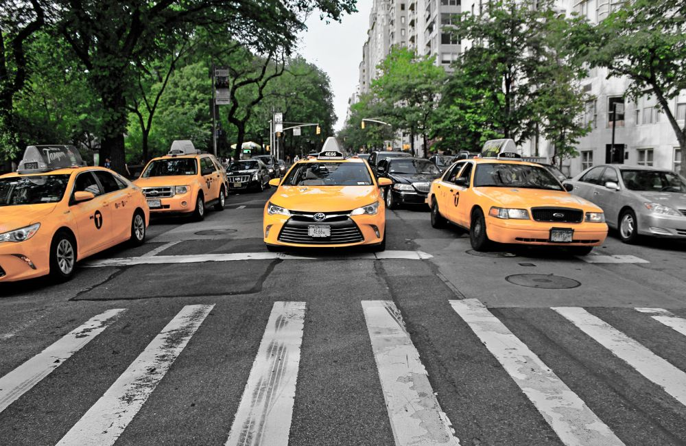
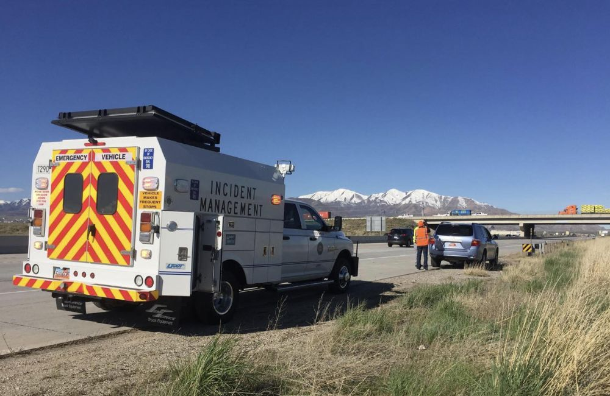

About Me
Everyone is a problem solver. That's not special. I thrive as a problem seeker—finding ambiguous, poorly-defined problems before anyone's named them, and shaping them into something structured enough to solve.
I want to predict the future and fix things before they break. That's part of why I study travel behavior. People are harder to model than most systems. They react to the systems built around them. And the world they move through keeps changing faster than ever before.
- Current: PhD Candidate, Civil Engineering — University of Michigan
- Background: BS, Applied & Computational Mathematics — BYU
- Focus: Travel Behavior, Data Quality, Passive Data, Machine Learning
- Toolkit: Researcher, Programmer, Modeler, Data Scientist
My work sits where statistics, data science, and transportation systems meet. I study how to make massive, messy, passively-collected smartphone location data trustworthy enough to model travel behavior—characterizing bias, validating representativeness, and building the pipelines that turn raw data into something researchers and practitioners can rely on.
Resume
Education
Ph.D., Civil Engineering (Next Generation Transportation Systems)
2024 - Expected 2029
University of Michigan, Ann Arbor, MI
Dual M.A., Statistics
2026 - Expected 2029
University of Michigan, Ann Arbor, MI
B.S., Applied & Computational Mathematics
2019 - 2024
Brigham Young University, Provo, UT
- Concentration: Transportation Systems Engineering
Publications & Awards
Completeness Filtering & Representativeness in Location-Based Services Data
2026
Presented at TRB 2026 and ASCE ICTD 2026
Transportation Technology Tournament — National Champion
2025
Co-Lead, NOCoE / ITS JPO / ITE
Research Experience
Graduate Research Assistant
2024 - Present
Infrastructure for All (INFRALL) Lab, University of Michigan
- Develop statistical frameworks to replace heuristic filtering thresholds in smartphone location data with empirically-derived, data-driven cutoffs, using classification and proxy labeling in the absence of ground-truth validation
- Characterize how filtering decisions shift the demographic representativeness of mobility datasets across the quality–retention tradeoff
- Process 20+ TB of national-scale GPS panel data via high-performance computing clusters and DuckDB-based SQL pipelines
Undergraduate Research Assistant
2022 - 2024
BYU Transportation Lab
- Analyzed e-scooter route selection in relation to pavement roughness data
- Built MATSim microsimulations of Utah's Wasatch Front to optimize incident management team performance
Undergraduate Research Assistant
2022 - 2024
Mathematical Fire & Industry Research (F.I.R.E.) Lab, BYU
- Forecasted urban wildfire vulnerability using an interdisciplinary predictive model
Skills
Python
NumPy, SciPy, SymPy, PySpark, Matplotlib, Seaborn, Scikit-Learn, Pandas, Geopandas, Shapely, Folium
Machine Learning and Neural Networks
Expertise in machine learning, including neural networks, for predictive modeling and data-driven insights
Statistical Analysis and Time Series Modeling
Proficient in ARIMA models, Bayesian modeling, and state-space techniques for data analysis and prediction.
Mathematical Modeling and Simulation
Skilled in differential equations, numerical methods, and dynamical systems for modeling and simulating complex engineering systems.
Technical Writing
Proficient in preparing clear and concise technical reports, research papers, etc.
Multidisciplinary Collaboration
Experienced in effective teamwork within diverse research projects, integrating insights from various fields to achieve common objectives
Highlighted Projects
- All
- Research
- School Projects
- Other

Forecasting NYC Taxi Demand Using Deep Learning
Optimizing Highway Incident Response with Simulation